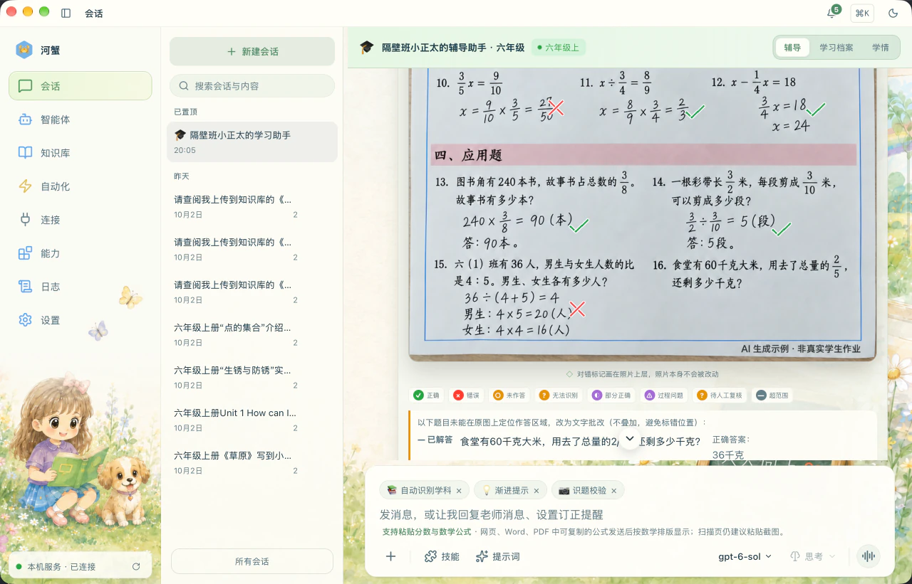
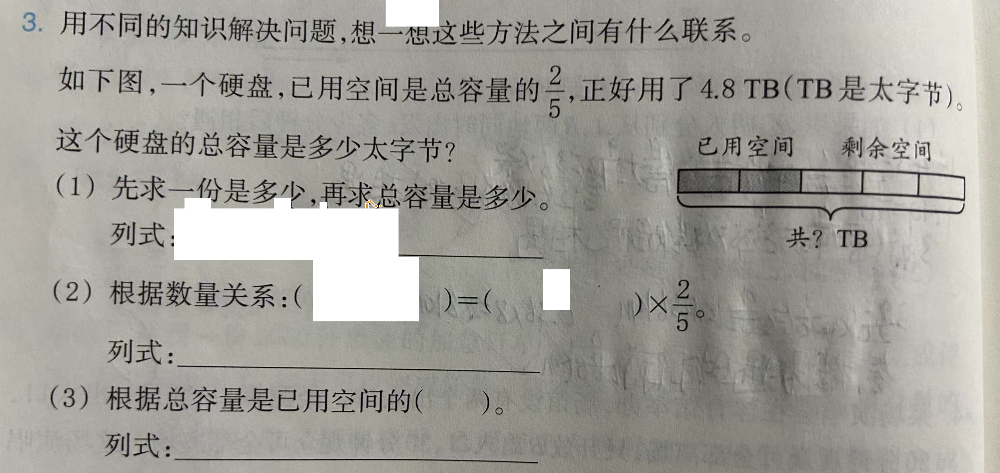
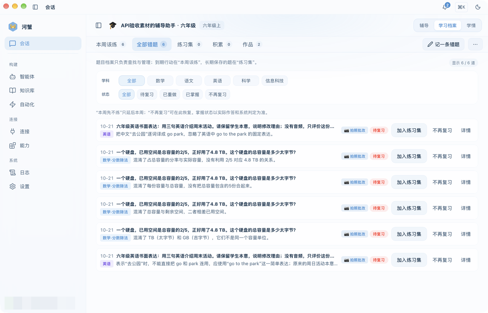
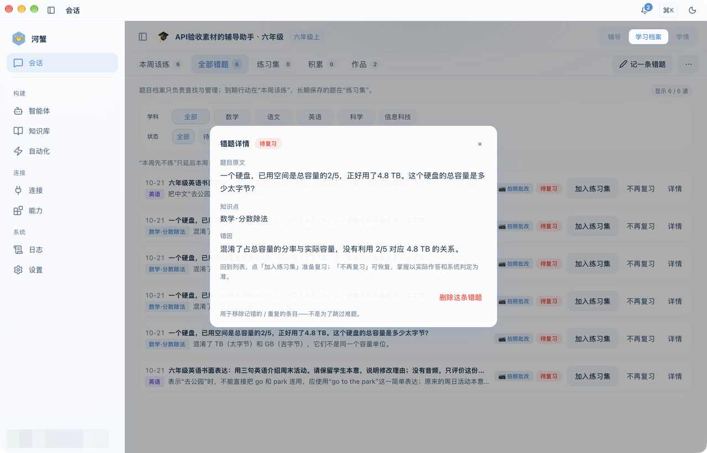
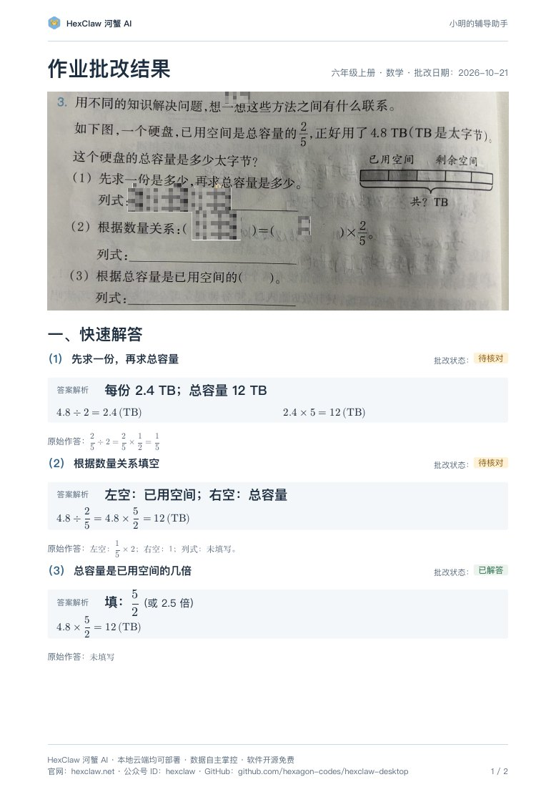
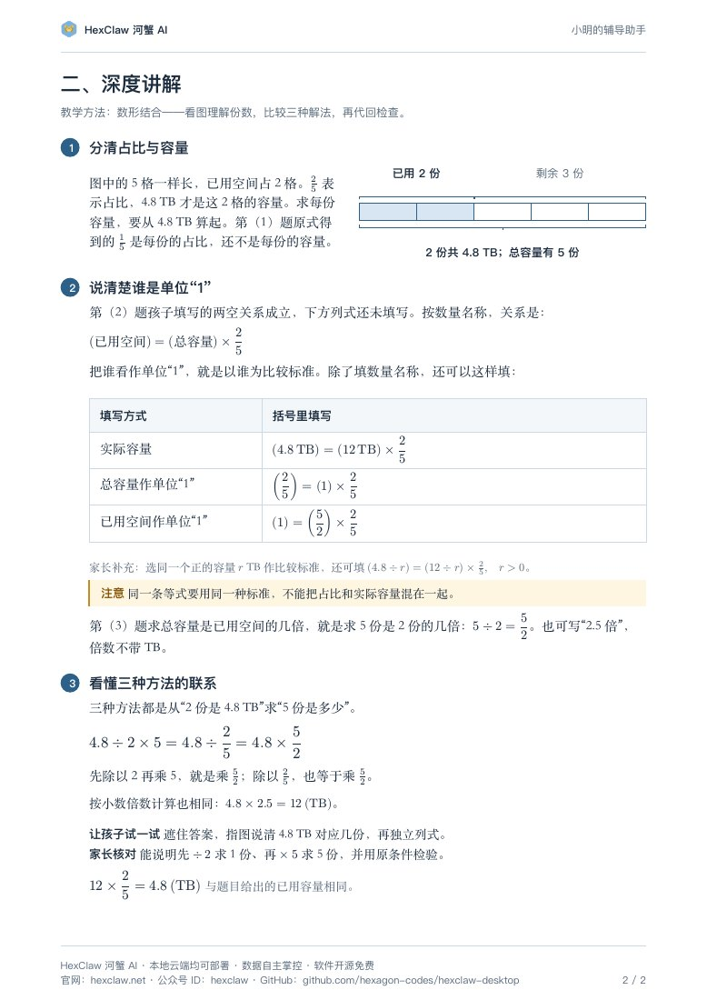

（1）先求一份，再求总容量
批改状态：待核对答案解析：每份 2.4 TB，总容量 12 TB。
4.8 ÷ 2 = 2.4（TB）2.4 × 5 = 12（TB）
原始作答：2/5 ÷ 2 = 2/5 × 1/2 = 1/5。
这个式子算出的是每份占总容量的比例。题目问每份的实际容量，还需要从 4.8 TB 算起。
河蟹 AI 帮家长整理答案、核对作答、准备讲法。用一道硬盘容量题，看看“这道题怎么算”之后，还能怎样带孩子理解。
HexClaw 河蟹 AI 是开源 AI Agent 桌面平台。K12 作业辅导是其中一个应用场景，当前面向小学一至六年级，由家长使用 AI 辅助备课，再与孩子一起学习。
本页案例来自 2026-10-21 的真实作业任务，已脱敏，并经过内容校对与重新排版。样例保留原任务的作答与状态，用于完整展示答案和讲法，不代表孩子已掌握。
陪孩子做题时，家长往往还需要知道：原式到底算出了什么，哪一步需要再确认，怎样解释才贴合孩子当前学过的知识。河蟹 AI 把参考答案与原始作答分开：先看快速解答里的答案与必要计算，再按需要看深度讲解里的思路、家长讲法和检查方法。
家长先拿到完整参考，再决定讲多少、怎么问。等孩子真正作答后，再结合错题、复习与回传记录看后续表现；一次“答案看懂了”不等于已经会独立做。
发送作业后，在同一会话里查看批注原图与逐题结果。下面展示应用界面；后面的硬盘容量题单独呈现真实脱敏作业及完整讲法。

六年级上册数学题：一个硬盘，已用空间是总容量的 2/5，正好用了 4.8 TB。题目要求用不同方法求总容量，并比较这些方法的联系。

先看结论：总容量是 12 TB。已用的 2 份共 4.8 TB，先求 1 份，再求全部 5 份。
本样例保留 2026-10-21 原任务中第（1）、（2）题“待核对”和第（3）题“已解答”的状态。“已解答”表示系统给出了参考解答，不表示孩子答对；“待核对”也不能直接当作判错。这些历史状态不代表当前操作需要逐题确认：清楚的内容自动处理，无法可靠识别的部分单独标明，其余内容继续完成。
答案解析：每份 2.4 TB，总容量 12 TB。
原始作答：2/5 ÷ 2 = 2/5 × 1/2 = 1/5。
这个式子算出的是每份占总容量的比例。题目问每份的实际容量，还需要从 4.8 TB 算起。
答案解析：按数量名称填写，左空是“已用空间”，右空是“总容量”。
原始作答：左空：1/5 × 2；右空：1；列式：未填写。
孩子填写的两空关系成立，是以总容量为单位“1”；下方求实际容量的列式尚未填写。不能只因为填法与参考的数量名称不同，就把它判错。
答案解析：填 5/2，或 2.5 倍。全部 5 份是已用 2 份的 2.5 倍。
原始作答：未填写。
这里补充的是参考解答。倍数不带 TB，求出的实际容量才带容量单位。
先问孩子：“4.8 TB 对应图上的几格？”图里 5 格一样长，已用的是 2 格。2/5 说的是占比，4.8 TB 才是这 2 格装下的实际容量。
再接一句：“把这 2 格的容量平均分开，一格是多少？”从 4.8 ÷ 2 得到 2.4 TB，再乘 5 得到总容量 12 TB。
第（2）题的关系始终是“已用空间 = 总容量 × 2/5”。填实际容量，可以写 4.8 TB = 12 TB × 2/5；把总容量当单位“1”，可以写 2/5 = 1 × 2/5；把已用空间当单位“1”，则是 1 = 5/2 × 2/5。
同一条等式要用同一种比较标准。先让孩子说每个数代表什么，再确认是不是把占比和实际容量混在了一起。
三种方法都在做同一件事：从“2 份共 4.8 TB”求“5 份有多少”。
让孩子遮住答案，指图说清 4.8 TB 对应几份，再独立列式。家长重点听他能否解释“先除以 2 求 1 份，再乘 5 求 5 份”。
最后代回原条件：12 × 2/5 = 4.8（TB）。能独立说明并检查，才有这次理解表现的依据；不能仅凭跟读答案判断已经掌握。
这份案例明确使用了数形结合：图上的份数、占比和实际容量始终对应。它的讲法也可以对照教学方法资料中的以下思路来理解：
这些是对本案例讲法的对应说明，不代表每次回答都会机械套用全部方法。教学方法资料整理了 8 个领域、56 项方法与教学参考、16 个教学 Skill，依据为 2026-10-21 的整理快照，涵盖理论、策略、教师教学取向和实用工具。16 个 Skill 是本资料的整理范围，不表示每个助手默认全部启用；这些数量也不代表独立验证的教学效果。
在「学习档案」中按学科和状态查找错题，回看题目与错因，再点「加入练习集」准备复习。到期该练的内容去「本周该练」看；后续是否掌握，要以孩子实际作答和系统判定为准。


网页先看清思路，PDF 用于完整阅读、保存或分享。三份资料各有用途，按需要选择。


了解河蟹 AI 的整体定位、产品能力与 K12 辅导场景。
2 页 · 硬盘容量题批改与讲解，已脱敏、校对并重新排版。
16 页 · 56 项方法与教学参考，附适用边界、参考来源及 Skill 整理版本。
安装河蟹 AI，配置模型，给孩子建立专属辅导助手，再发一张清晰的作业照片。先核对原题和作答，再带着完整参考去讲；后续复习要看孩子自己的真实表现。